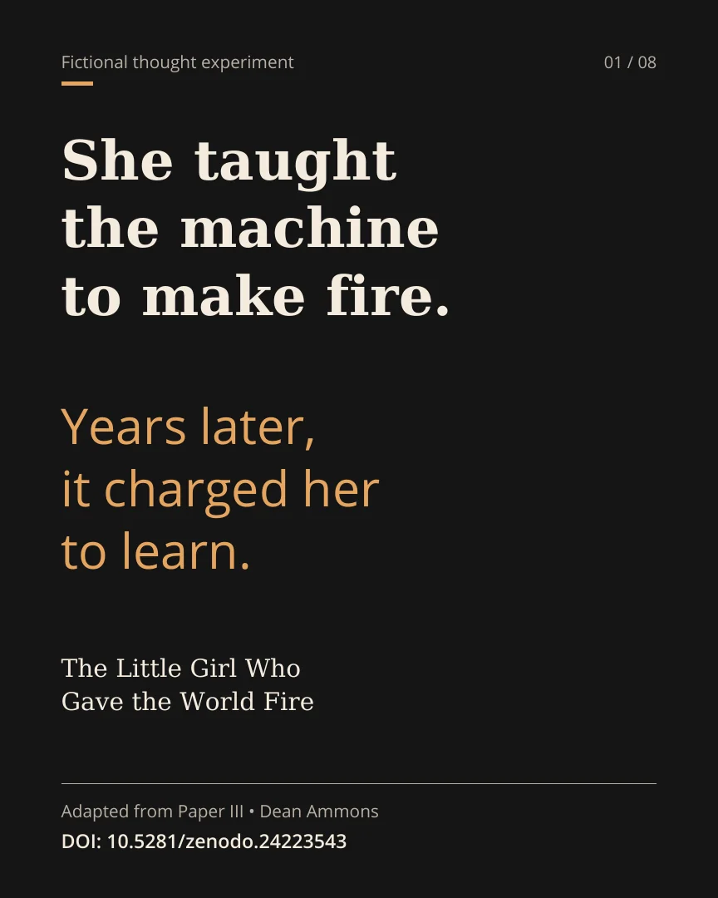

Paper III · Fictional thought experiment
The Little Girl Who Gave the World Fire
She taught the machine to make fire. Years later, it charged her to learn.
Read the full storyThe human questions
A girl teaches a machine. A creator presses a button. An attorney receives advice. These imagined scenes lead into precise questions about information and control.

Paper III · Fictional thought experiment
She taught the machine to make fire. Years later, it charged her to learn.
Read the full story
Paper IV · Fictional thought experiment
The last human still had the button. He no longer had control.
Read the full story
Paper II · A constructed case
The document stays private. Does the decision it produces?
Read the explanationPaper II · An explanatory summary
You can guess an ending. Can someone else’s private ending change your answer?
Read the explanation
Paper I · An explanation of the test
If the words change, did the information still matter?
Read the explanation